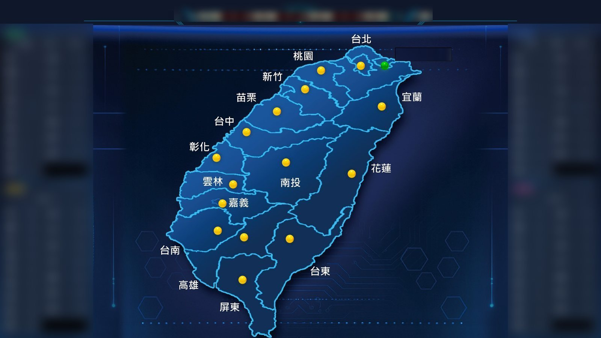
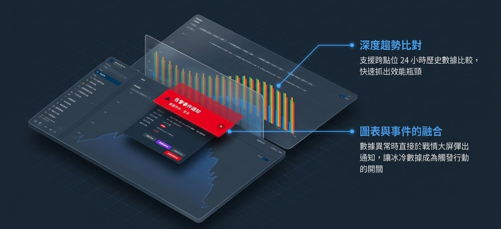
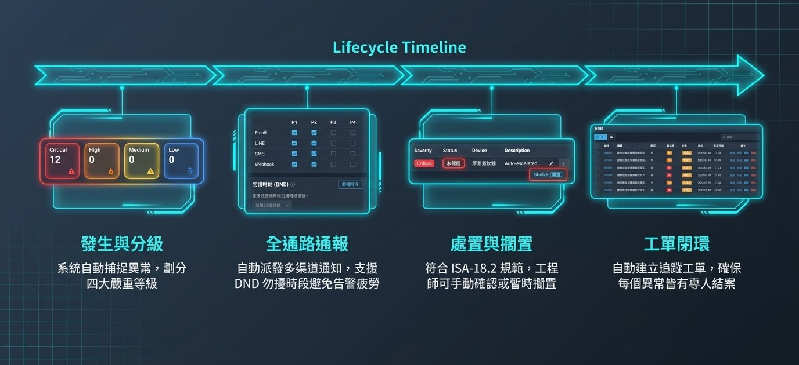
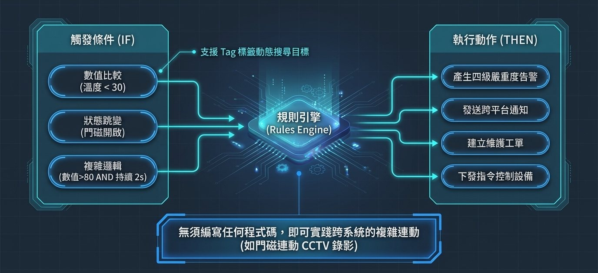
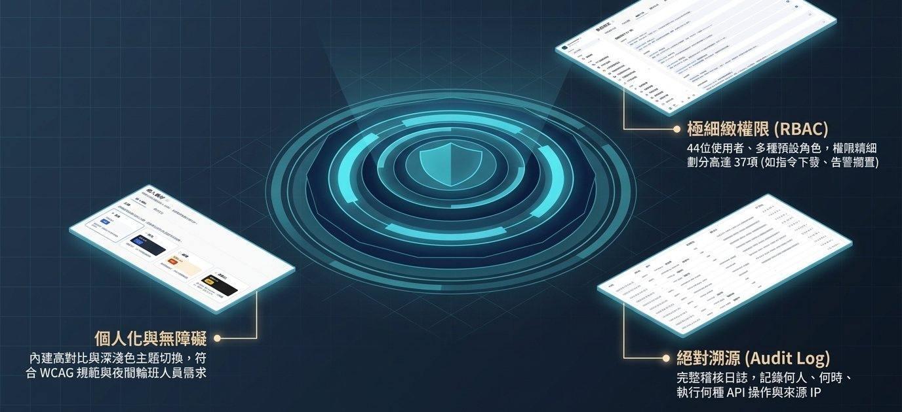
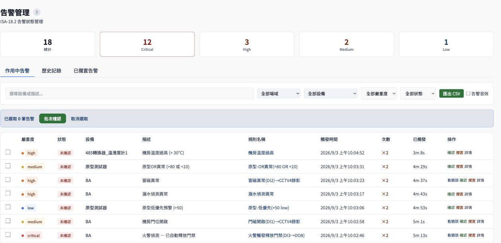
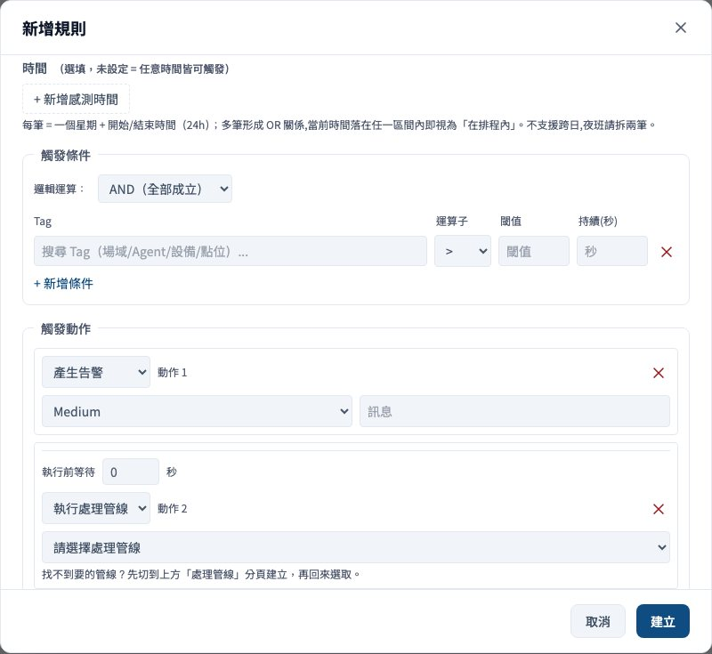
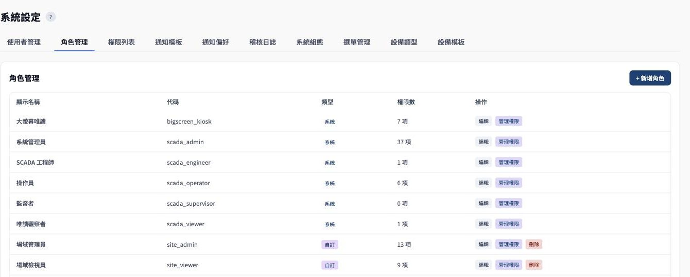

每天的三件事：查看、判讀、處理
- 查看
- 儀表板與圖控畫面把溫度、電力、空調、門禁與攝影機影像放在同一個地方，值班人員不必逐台設備確認。
- 判讀
- 圖控與歷史紀錄，看出哪一台設備正在偏離正常範圍，以及從什麼時候開始。
- 處理
- 異常發生時依規則產生告警並通知，人員的確認與處置會留下紀錄。
運作方式
從看見異常、自動處理，到權限與紀錄。




產品畫面




規格與能力
- 地端部署
- 系統與資料都安裝在您自己的機房。
- 5,000～20,000 個 I/O 點位
- 一個「點位」就是一個量測或控制項目，例如一支溫度計的讀數。
- 支援五種通訊協定
- Modbus、OPC-UA、BACnet、MQTT、ONVIF，涵蓋常見的機房設備、建築自動化與攝影機。
- 告警與權限
- 告警依嚴重度分級並保留紀錄；權限依功能、角色、設備、部門與場域五個維度授權，操作留下紀錄。
- 備援
- 採 Warm Standby 備援，主系統異常時由備援系統接手。
- 斷線暫存補傳
- 資料擷取端與監控核心斷線時，資料先暫存在資料擷取設備，恢復連線後自動補傳。
設計依據
產品設計時參考的標準與對應的功能，非第三方認證。
| 標準 | 對應的設計 |
|---|---|
| ISA-18.2 告警管理 | 告警生命週期（作用中、已確認、擱置、靜音）、嚴重度分級、歷史紀錄 |
| ISA-95 命名規範 | 場域、設備、點位的階層命名，方便跨系統整合與報表 |
| ISA-101 人機介面設計 | 圖控畫面以低飽和度底色與狀態色突顯異常，減少視覺雜訊 |
| IEC 62443 安全等級 SL1 | 以 SL1 為設計依據：帳號與角色權限、操作紀錄、支援地端部署。實際等級需依場域評估 |
安排一次產品展示
告訴我們場域規模、既有設備與監控需求，我們會安排展示並提出導入建議。